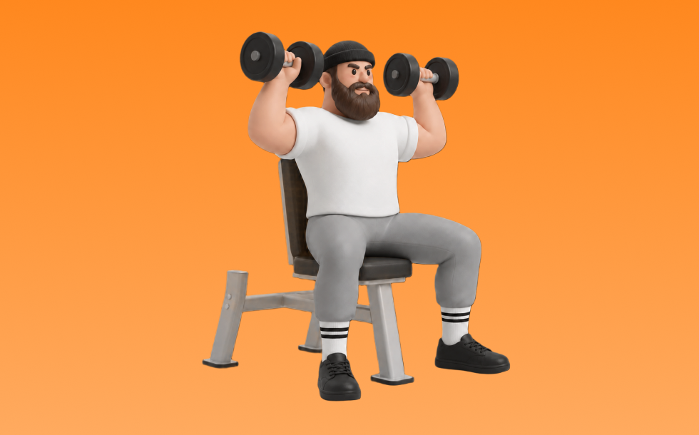

ダンベルショルダープレス

ダンベルショルダープレスとは、ダンベルを使って「押す」動作で肩（三角筋）、腕（上腕三頭筋）を鍛える種目です。可動域が広く、左右のバランスを整えやすいのが特徴で、反動を抑えてコントロールしながら反復します。肩の厚みづくりとオーバーヘッドの押す力の向上が期待できます。
- 対象部位
- 肩
- 器具
- ダンベル
- 記録形式
- 重量・回数
- 別名
- DBショルダープレス
YouTube動画
-
ダンベルショルダープレスのやり方・フォーム | 「肩関節や肘が痛い」「椅子の角度が不明」初心者向け動作説明です！
-
【ショルダープレス】肩と腰を怪我せずに三角筋を鍛えるフォーム解説
-
ダンベルショルダープレスの正しいやり方｜肩を鍛えるのにオススメ
-
【どのフォームが正しい？】肩トレで人気のショルダープレス、サイドレイズで気になるポイントを全部解説します【筋トレ】
-
三角筋を鍛える「ダンベルショルダープレス」の正しいやり方【15回×3セット】
-
【それNGです】ショルダープレス：4つのエラー動作と改善方法【筋トレ】
-
【徹底解説】丸い肩を作る！IFBB PRO 寺島遼のダンベルショルダープレス！
-
【ダンベルで行う】肩が苦手な人がやるべき種目3選をわかりやすく解説します
-
これをやらないとデカくならない！肩トレ最強種目を徹底解説！！
-
丸く大きい肩をつくるダンベルショルダープレスのコツ！
-
【初心者】ダンベルショルダープレスで肩を大きくするやり方 | ボディビルダーが解説！【ビーレジェンド プロテイン】
-
ショルダープレスで本当に肩に効かせたい人がやってはいけないこととは？【肩トレ】
-
肩にしか効かない【ダンベルショルダープレス】のやり方
-
【裏技】100%肩をデカくするダンベルショルダープレスのコツ
-
オンザニーテクニックでダンベルショルダープレス攻略
-
肩の筋肉を鍛えるダンベル筋トレ「片腕ショルダープレス」の正しいやり方
YouTubeショート
-
効かせるショルダープレス
-
ダンベル・ショルダープレスの正しいやり方 | ボディビル日本チャンピオンが解説 #shorts 【ビーレジェンド プロテイン】
-
効いちゃいすぎて夜寝れんくなるダンベルショルダープレス3つのコツ
-
見逃すな！ショルダープレスの鉄則！ #肩トレ #自宅トレーニング #ショルダープレス
-
正しいダンベルショルダープレス
-
ダンベルショルダープレスの正しいやり方はこれ‼️#ダイエット #トレーニング #パーソナルトレーニング #筋トレ #肩トレ
-
持田選手の肩を痛めないためのショルダープレス。必見です。 #トレーニング #筋トレ #volix #fitness #workout #肩トレ
-
マシンを使ったショルダープレスのコツ
-
【シャイニー選手】 ダンベルショルダープレスのポイント
-
ダンベルショルダープレスで1番大事なこと
-
【ダンベル】肩トレ3選 #筋トレ
-
カネキン式ダンベルショルダープレスのコツ#shorts #筋トレ #肩トレ
-
【肩トレ】【ショルダープレス】よくある3つの間違い #パーソナルトレーナー #筋トレ #肩トレ
-
【ダンベルを使ったショルダープレスの正しいやり方】魅せる肩、つくりたいならここから！｜Training Movie 100｜Tarzan Web
-
みなさんはダンベルショルダープレスどのようにされてますか？？今回は持田選手がダンベルショルダープレスを伝授！次はどの種目の解説をやってほしいかコメントしてね！#ちょこっと惜しい
-
筋トレ初心者必見‼︎ダンベルショルダープレスの正しいやり方 #筋トレあるある #筋トレ初心者 #肩トレ
-
正しいサイドレイズ4つのポイント #筋トレ
-
初心者にありがちなミス スミスマシン ショルダープレス🏋️♀️
-
肩トレこの3種類で十分やと思うねんけど、マッチョ警察の方々どう思う？
-
胸トレで腕肩を使わないコツ #筋トレ女子
-
みなさんはミリタリープレスやってますか？持田選手がしっかり三角筋に効くトレーニングをレクチャーしてくれました！#volix #肩トレ #ちょこっとおしい #三角筋 #volixgear
-
初心者向け！ダンベルショルダープレスでレベルアップする方法！ #筋トレ
-
サイドレイズはここを気をつけると全然肩が変わる！ #サイドレイズ #筋トレ #トレーニング
-
今日の肩トレ！#筋トレ大学生 #筋トレ男子 #gymmotivation #fitnessmotivation
-
みなさんはアーノルドプレスやってますか？持田選手（おかずもち）がしっかり三角筋に効くトレーニングをレクチャーしてくれました！#筋トレ #volix #肩トレ #ちょこっと惜しい #三角筋
-
肩に効かないショルダープレス #筋トレ
-
【オーバーヘッドプレス】正しいフォームが身につく5つのポイント
-
胸が成長しないダンベルプレス #筋トレ
動作方法
- 安定した姿勢を作り、肩と体幹を固定する
- 狙う部位を意識して、反動を使わずに押す
- 可動域を保ちながら、ゆっくり元に戻す
動作ポイント
- 肩をすくめない
- 手首を寝かせすぎない
- 反動を使いすぎない
ワンポイントアドバイス
- 重量よりも肩の軌道を安定させる
- 首まわりの力みを減らして行う
目的別回数設定
目的や体力に応じた一般的な目安です。無理のない範囲で調整してください。
- 筋力アップ
- 1〜5回
- 筋肥大
- 6〜12回
- 持久力アップ
- 13〜20回
YouTube動画について
動画はYouTubeの公開情報をもとに表示しています。内容は投稿者によるもので、Biggrによる監修ではありません。
アプリを入手
筋トレやトレーニングの記録はBiggrにお任せください。今すぐ無料で使い始められます。